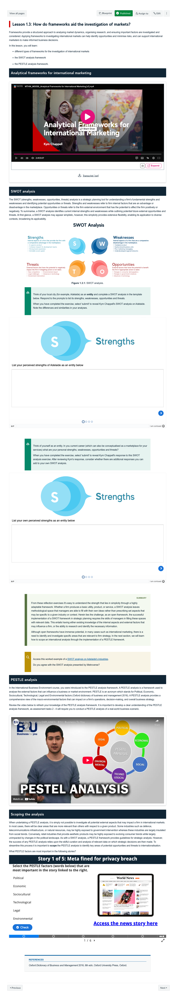
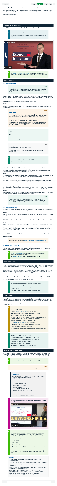

Course Description
International marketing is a rapidly growing area within the disciplines of marketing and international business. Central to international marketing is the response of international rather than domestic buyers in the marketing environment, the types of decisions that are most feasible, and the information required for decision-making. During this course, the student will gain insights into the pressures created by the international economic, political, legal and cultural environmental influences on marketing planning. This course will enable students to learn the analytical skills required to develop international marketing plans and develop the marketing mix elements in the international environment.
Learning Outcomes
- Apply basic international marketing theories and concepts to understand the environment.
- Undertake strategic business analysis in order to develop appropriate international marketing objectives and strategies.
- Identify, analyse, and evaluate data information and evidence related to international business opportunities and threats relevant in the current world.
- Communicate, clarify, discuss with peer audiences relevant topics in a professional setting and work in a team reflected in assessment activities.
- Produce a report considering the marketing of a business to consumers or business customers in different cultural and international contexts with consideration of ethical conduct.
Learning Experience
Topics
- Globalisation and Introducing the PESTLE Model
- Weekly Discussions
- Political and Legal Factors
- Economic and Demographic Indicators
- Sociocultural Factors
- Technological Factors
- Ethical and Environmental Factors
- International Market Selection and Entry
- Product Differentiation and Pricing for International Markets
- Services
- International Promotion
- Current Events
Development Team
Kym Chappell
Course Author
Lead
Valerie Hughes
Learning Designer
Lead
Zac Vandersman
Digital Education Developer
Lead
Assessments
-
Weekly discussions
Short Response Questions
Learners are required to engage in discussions to help them develop the analytical, critical thinking, and communication skills necessary to successfully pass this course.
10%
-
Case study analysis
Case Study
Learners conduct a PESTLE analysis to determine what opportunities and threats exist for Australian exports attempting to enter the Chinese market.
20%
-
Strategic report & PESTLE analysis
Report, Critical Analysis
Learners to conduct an analysis, prepare a strategic plan and develop a report that provides recommendations for an SME wishing to expand into a new overseas market.
30%
-
Strategic report: core benefit, promotion and protection
Report
Learners analyse an AgTech product and prepare a strategic report outlining the product attributes and service attributes, and propose promotion and protection strategies for the international market.
30%
Snapshots



Learning Resources
-
The Wheel of International Marketing.

-
SWOT analysis

-
Legal systems
-
Hofstede's onion model
-
Evolution of technology
-
INCOTERMs

-
Advantages of services over physical products